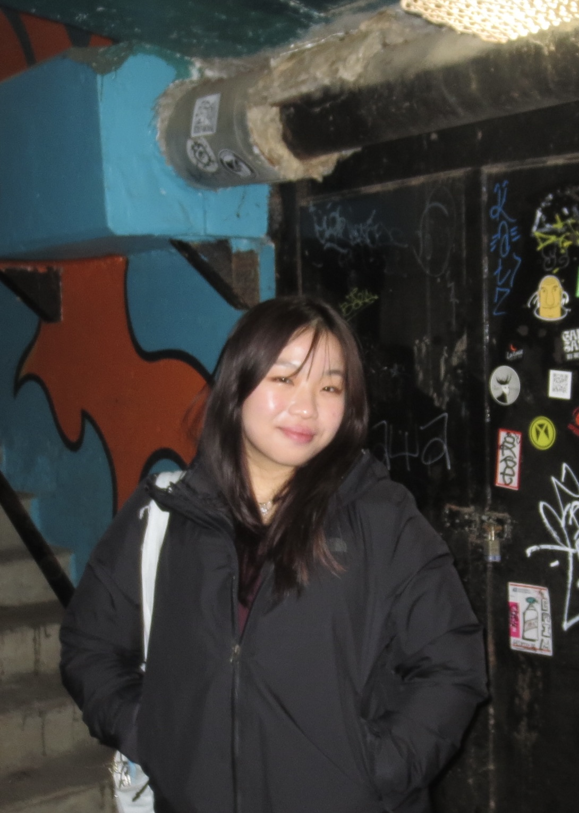

I'm  ,
,
a Creative Technologist 👩💻 & UX Designer based in New York City 🗽
I work across pixels and circuits: web and product design, plus interactive installations I design, code and build myself.
Contact me at:
Highlighted Works
Filter by the kind of role you're hiring for.

About Me
I work across pixels and circuits to design interactive experiences.
Hi again, I am Carla Budar, a Design and Technology graduate from Parsons School of Design 🗽. I love using creative technology as tools for building fun, intuitive, and engaging experiences. I aim to produce streamlined designs, whether I'm designing for the web 👾, experimenting with systems and sensors 📟, or modelling products 🪅. I believe, "good design" is the sweet spot between practicality and play.
Outside of design work, I enjoy photography 📸 and videography 🎥 as a way of slowing down and noticing details and feelings. I also enjoy making soft structures like bags and clothing, which gives me a more intuitive, material-focused way to create 🪡 🧵, a contrast to the technical side of my practice.
Creative Software · Illustrator, Photoshop, Premiere Pro, Lightroom, InDesign, Fusion 360, Figma, Miro, Unity
Technologies & Languages · HTML, CSS, JavaScript, TypeScript, Python, C, C#, Arduino